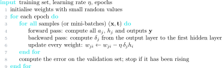

being its activation derivative times the weighted errors of the neurons it feeds, and every weight moves by .
being its activation derivative times the weighted errors of the neurons it feeds, and every weight moves by .Method
Error for one sample, squared form: . With , :
Update (plus momentum). With softmax and cross-entropy the output error simplifies to .Algorithm

Intuition
Blame flows backwards: each neuron receives a share of the output error proportional to how much it contributed, and adjusts its weights accordingly.
Pitfall
Gradient descent finds local minima and is sensitive to the learning rate and to feature scaling; sigmoid networks with many layers suffer vanishing gradients, one reason deep networks use ReLU.